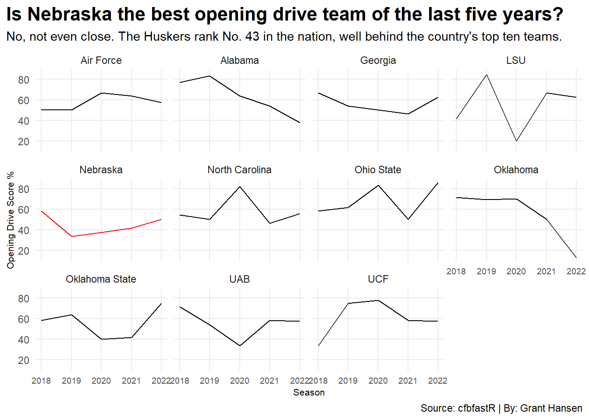
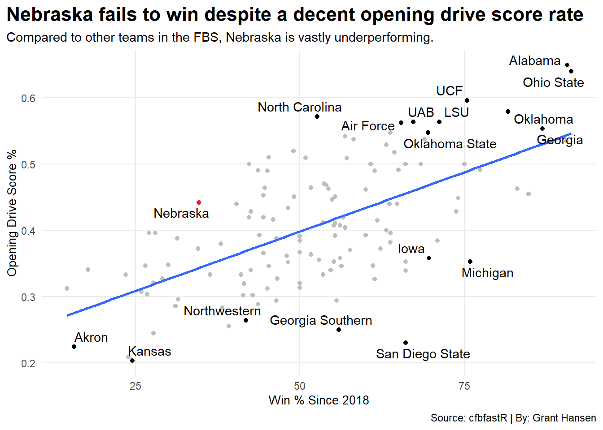
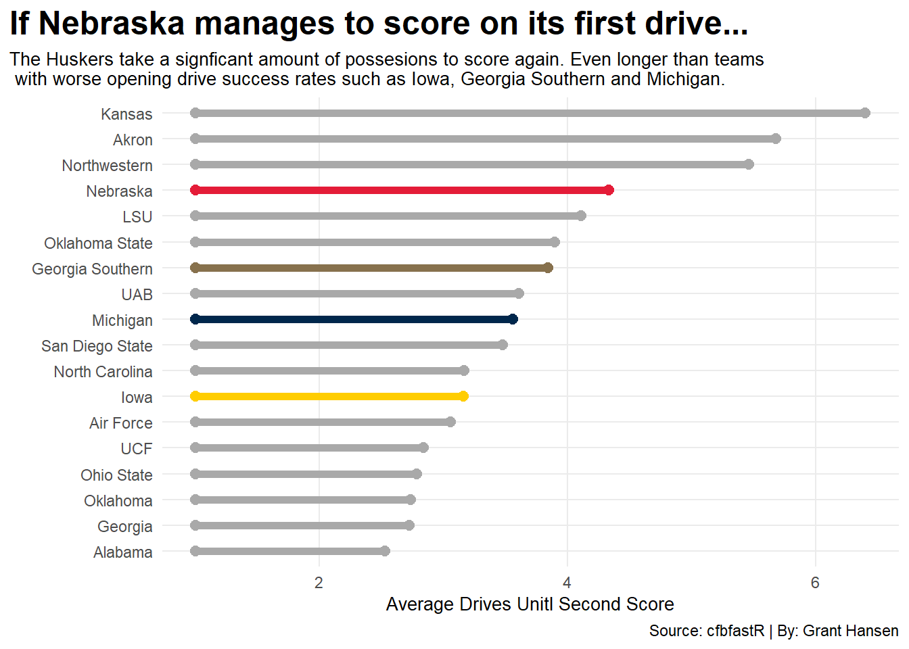

library(tidyverse)
library(cfbfastR)
library(ggrepel)
library(ggalt)drives22<-cfbd_drives(
2022,
season_type = "regular"
) %>%
mutate(season=2022)drives18<-cfbd_drives(
2018,
season_type = "regular"
)%>%
mutate(season=2018)drives19<-cfbd_drives(
2019,
season_type = "regular"
)%>%
mutate(season=2019)drives20<-cfbd_drives(
2020,
season_type = "regular"
)%>%
mutate(season=2020)drives21<-cfbd_drives(
2021,
season_type = "regular"
)%>%
mutate(season=2021)drives<-bind_rows(
drives22, drives21, drives20, drives19, drives18
)drives %>%
group_by(drive_result ) %>%
filter(offense=="Nebraska", drive_number<=2) %>%
summarize(Results=n()
)# A tibble: 7 × 2
drive_result Results
<chr> <int>
1 DOWNS 3
2 FG 3
3 FUMBLE 3
4 INT 3
5 MISSED FG 1
6 PUNT 18
7 TD 21I am going to create a facet wrap showing the top 10 teams in first drive success rate this season as well as Nebraska.
FiveYearSuccessRate<-drives %>%
filter(drive_number<=2) %>%
group_by(offense, season, scoring) %>%
summarize(count = n()) %>%
pivot_wider(names_from = scoring, values_from = count) %>%
replace(is.na(.), 0) %>%
mutate(GamesPlayed= `TRUE` + `FALSE`) %>%
group_by(offense) %>%
summarize(
Score=sum(`TRUE`),
Total=sum(GamesPlayed)) %>%
mutate(SuccessRate=Score/Total) %>%
filter(Total>40) %>%
arrange(desc(SuccessRate))`summarise()` has grouped output by 'offense', 'season'. You can override using
the `.groups` argument.YearlySuccess<-drives %>%
filter(drive_number<=2) %>%
group_by(offense, season, scoring) %>%
summarize(count = n()) %>%
pivot_wider(names_from = scoring, values_from = count)%>%
replace(is.na(.), 0) %>%
mutate(GamesPlayed= `TRUE` + `FALSE`) %>%
group_by(offense, season) %>%
summarize(
Score=sum(`TRUE`),
Total=sum(GamesPlayed)) %>%
mutate(SuccessRate=Score/Total*100) %>%
filter(Total>5) %>%
arrange(desc(SuccessRate))`summarise()` has grouped output by 'offense', 'season'. You can override using
the `.groups` argument.
`summarise()` has grouped output by 'offense'. You can override using the
`.groups` argument.nu<-drives %>%
filter(drive_number<=2) %>%
group_by(offense, season, scoring) %>%
summarize(count = n()) %>%
pivot_wider(names_from = scoring, values_from = count) %>%
replace(is.na(.), 0) %>%
mutate(GamesPlayed= `TRUE` + `FALSE`) %>%
group_by(offense) %>%
summarize(
Score=sum(`TRUE`),
Total=sum(GamesPlayed)) %>%
mutate(SuccessRate=Score/Total) %>%
filter(Total>40, offense=="Nebraska")`summarise()` has grouped output by 'offense', 'season'. You can override using
the `.groups` argument.nuplustop10<-YearlySuccess %>%
filter(offense=="Nebraska"|offense=="Alabama"|offense=="Ohio State"|offense=="UCF"|offense=="Oklahoma"|offense=="North Carolina"|offense=="Georgia"|offense=="LSU"|offense=="UAB"|offense=="Air Force"|offense=="Oklahoma State")nucolor<-nuplustop10 %>% filter(offense=="Nebraska")Now to make the chart.
ggplot()+
geom_line(data = nuplustop10, aes(x=season, y=SuccessRate, group=offense))+
geom_line(data = nucolor, aes(x=season, y=SuccessRate, group=offense), color="red")+
facet_wrap(~offense)+
labs(title = "Is Nebraska the best opening drive team of the last five years?", subtitle = "No, not even close. The Huskers rank No. 43 in the nation, well behind the country's top ten teams.", y="Opening Drive Score %", x="Season", caption="Source: cfbfastR | By: Grant Hansen")+
theme_minimal()+
theme(
plot.title = element_text(size = 16, face= "bold"),
axis.title = element_text(size=8),
plot.subtitle = element_text(size=11),
plot.title.position = "plot",
panel.grid.minor = element_blank(),
axis.text.x = element_text(size=7)
)
Next up is a scatter plot contrasting wins in the last five seasons and aggregate score rate on opening drives.
Records18<-cfbd_game_records(2018)Records19<-cfbd_game_records(2019)Records20<-cfbd_game_records(2020)Records21<-cfbd_game_records(2021)Records22<-cfbd_game_records(2022)FiveYearRecords<-bind_rows(Records18, Records19, Records20, Records21, Records22)I need to set up my data to find the combined win percentage of the last five seasons.
FiveYearWinRate<-FiveYearRecords %>%
group_by(team) %>%
summarize(
Total=sum(total_games),
Wins=sum(total_wins)
) %>%
mutate(WinPercentage=Wins/Total*100)FiveYearTotals<-bind_rows(FiveYearWinRate, FiveYearSuccessRate) FiveYearTotals<-FiveYearWinRate %>% inner_join(FiveYearSuccessRate, by=c("team"="offense"))Going to run a regression now.
fit<-lm(WinPercentage~SuccessRate, data = FiveYearTotals)
summary(fit)
Call:
lm(formula = WinPercentage ~ SuccessRate, data = FiveYearTotals)
Residuals:
Min 1Q Median 3Q Max
-27.748 -8.130 0.246 8.585 32.414
Coefficients:
Estimate Std. Error t value Pr(>|t|)
(Intercept) 9.164 5.000 1.833 0.0691 .
SuccessRate 106.135 11.988 8.854 5.94e-15 ***
---
Signif. codes: 0 '***' 0.001 '**' 0.01 '*' 0.05 '.' 0.1 ' ' 1
Residual standard error: 12.72 on 128 degrees of freedom
Multiple R-squared: 0.3798, Adjusted R-squared: 0.375
F-statistic: 78.39 on 1 and 128 DF, p-value: 5.945e-15FiveYearNU<-FiveYearTotals %>% filter(team=="Nebraska"|team=="Alabama"|team=="Ohio State"|team=="UCF"|team=="Oklahoma"|team=="North Carolina"|team=="Georgia"|team=="LSU"|team=="UAB"|team=="Air Force"|team=="Oklahoma State"|team=="San Diego State"|team=="Iowa" |team=="Akron"| team=="Michigan"| team=="Kansas" |team=="Georgia Southern" | team=="Northwestern")nucolor<-FiveYearTotals %>% filter(team=="Nebraska")ggplot()+
geom_point(data=FiveYearTotals, aes(x=WinPercentage, y=SuccessRate), color="grey")+
geom_point(data=FiveYearNU, aes(x=WinPercentage, y=SuccessRate), color="black")+
geom_point(data=nucolor, aes(x=WinPercentage, y=SuccessRate), color="#E41C38")+
geom_smooth(data=FiveYearTotals, aes(x=WinPercentage, y=SuccessRate), method = "lm", se=FALSE)+
geom_text_repel(data=FiveYearNU, aes(x=WinPercentage, y=SuccessRate, label=team))+
labs(
x="Win % Since 2018",
y="Opening Drive Score %",
title="Nebraska fails to win despite a decent opening drive score rate",
subtitle="Compared to other teams in the FBS, Nebraska is vastly underperforming.",
caption="Source: cfbfastR | By: Grant Hansen"
)+
theme_minimal()+
theme(
plot.title = element_text(size = 16, face= "bold"),
axis.title = element_text(size=10),
plot.subtitle = element_text(size=11),
plot.title.position = "plot",
panel.grid.minor = element_blank()
)`geom_smooth()` using formula 'y ~ x'
CHART 3
drivesDB <- drives %>% arrange(offense, game_id) %>% group_by(offense, game_id) %>% mutate(team_drive = row_number())openingdrives <- drives %>% filter(drive_number == 1 | drive_number == 2) %>% filter(scoring == TRUE)od <- openingdrives %>% select(game_id)DBDRIVESCHART<-drivesDB %>%
inner_join(od) %>%
filter(scoring == TRUE) %>%
mutate(whichscore = row_number()) %>%
filter(whichscore == 2) %>%
group_by(offense) %>% summarize(next_score = mean(team_drive)) %>% mutate(FirstDrive=1)Joining, by = "game_id"DBFiltered<-DBDRIVESCHART %>% filter(offense=="Nebraska"|offense=="Alabama"|offense=="Ohio State"|offense=="UCF"|offense=="Oklahoma"|offense=="North Carolina"|offense=="Georgia"|offense=="LSU"|offense=="UAB"|offense=="Air Force"|offense=="Oklahoma State"|offense=="San Diego State"|offense=="Iowa" |offense=="Akron"| offense=="Michigan"| offense=="Kansas" |offense=="Georgia Southern" | offense=="Northwestern")nuDB<-DBDRIVESCHART %>% filter(offense=="Nebraska")iwDB<-DBDRIVESCHART %>% filter(offense=="Iowa")
miDB<-DBDRIVESCHART %>% filter(offense=="Michigan")
gsDB<-DBDRIVESCHART %>% filter(offense=="Georgia Southern")ggplot()+
geom_dumbbell(
data = DBFiltered,
aes(y=reorder(offense, next_score), x=FirstDrive, xend=next_score),
size= 2,
color=" dark grey"
)+
geom_dumbbell(
data = nuDB,
aes(y=reorder(offense, next_score), x=FirstDrive, xend=next_score),
size= 2,
color="#E41C38"
)+
geom_dumbbell(
data = iwDB,
aes(y=reorder(offense, next_score), x=FirstDrive, xend=next_score),
size= 2,
color="#FFCD00"
)+
geom_dumbbell(
data = miDB,
aes(y=reorder(offense, next_score), x=FirstDrive, xend=next_score),
size= 2,
color="#00274C"
)+
geom_dumbbell(
data = gsDB,
aes(y=reorder(offense, next_score), x=FirstDrive, xend=next_score),
size= 2,
color="#87714D"
)+
labs(
x="Average Drives Unitl Second Score",
y="",
title="If Nebraska manages to score on its first drive...",
subtitle="The Huskers take a signficant amount of possesions to score again. Even longer than teams\n with worse opening drive success rates such as Iowa, Georgia Southern and Michigan.",
caption="Source: cfbfastR | By: Grant Hansen")+
theme_minimal()+
theme(
plot.title = element_text(size = 18, face= "bold"),
axis.title = element_text(size=10),
plot.subtitle = element_text(size=10),
plot.title.position = "plot",
panel.grid.minor = element_blank())